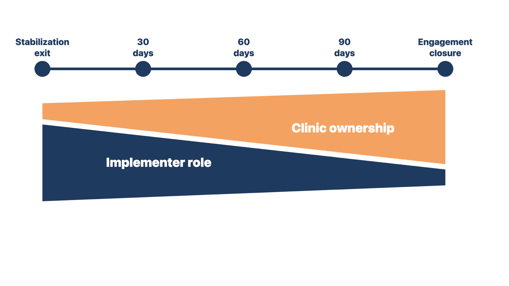
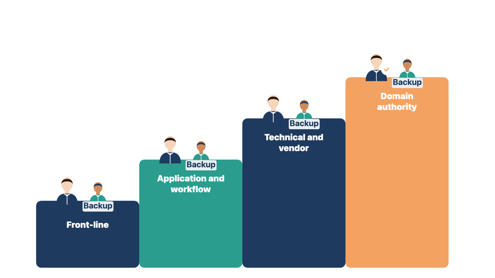
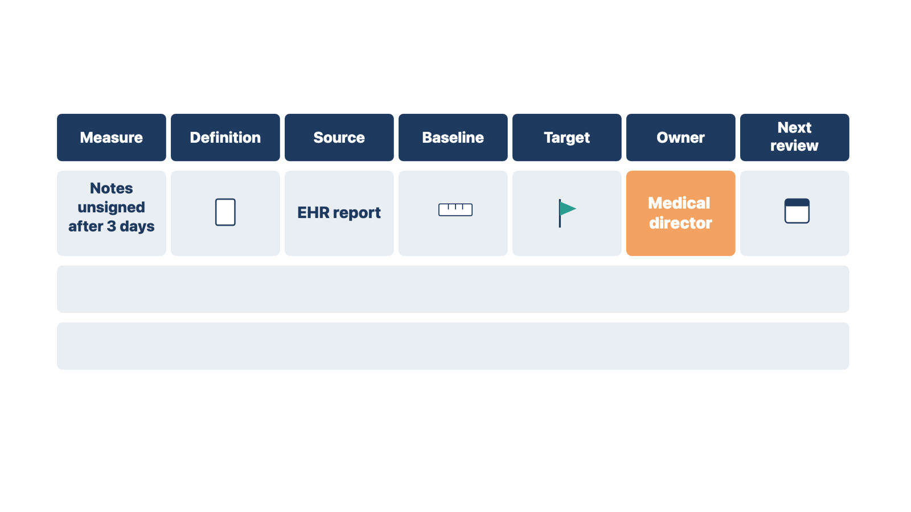

If users still bring problems to you after the transfer, the clinic depends on you. Its support team also cannot see the real workload.
Module 12 ended stabilization on evidence and transferred ownership through demonstration. Steady state is normal daily operation after that transfer. In the post-live period, you check that the transfer is real.

If users still contact you directly, log the request and send it through the approved route. Then tell the operating owner. Quiet fixes keep the clinic dependent on you. They also hide the load the clinic's support team must carry.
Write a short, dated steady-state handoff note. It states which support tasks you still do under the contract, which you have stopped, and the date each one stopped.
Rule: When a user brings a problem to you after transfer, send it through the clinic's route and tell the owner.
At Cedar Point, a medical assistant messages you about a printer error. You log it, send it to the help desk, and tell the IT lead. At a cardiology clinic, the office manager asks you to reset a password. You point her to the clinic's application owner, who now handles access. In both cases, the work goes to the owner, and the owner sees it.
Check yourself
Clear service levels tell everyone how fast help will come. Mixing vendor promises with internal targets leads to promises nobody can keep.
A service level is a written target for how fast support responds, updates, and restores service. Some targets come from the vendor contract. Others are internal targets the clinic sets for its own staff. Keep the two apart. Do not promise the clinic a vendor response time the contract does not contain.
Use the four support tiers from the Performance, Reliability, and Support Guide: front-line, application and workflow, technical and vendor, and domain authority. Then fill in a service-level table that the clinic approves.
| Severity | Example | Response | Update | Owner |
|---|---|---|---|---|
| 1 | Clinic cannot see patients | Per contract | Hourly | IT lead |
| 2 | One workflow blocked | Per contract | Daily | App owner |
| 3 | Workaround exists | Internal target | Weekly | Help desk |
| 4 | Question or request | Internal target | On close | Help desk |

Rule: Bring evidence of a missed vendor target to the contract owner; do not claim remedies yourself.
At Cedar Point, three severity 2 cases waited longer than the contract allows. You bring the case log to the practice administrator, who owns the contract, and to the vendor's escalation contact. At an orthopedic clinic, the help desk misses its own internal target. The practice manager, who set the target, decides what to change. In both cases, the person who owns the target decides the response.
Check yourself
Scheduled reviews keep attention on results after the go-live energy fades. Each review needs a clear decision, or it becomes a status chat.
Module 12 set follow-up at the first day, week, and month. The post-live reviews extend that cadence. Each review has a purpose, a data set, and a decision. Adjust the timing to the contract and the risk.
| Review | Main question | Typical decision |
|---|---|---|
| 30 days | Is the approved workflow in use? | Coaching, fixes, workaround removal |
| 60 days | Are the measures moving? | Backlog priorities, refresher training |
| 90 days | Did we get the purchased outcome? | Close, extend, or hand off measures |
Invite the sponsor, the operating owners, and the owner of each clinical, billing, or privacy measure on the agenda. Send the data two business days ahead. Record decisions, owners, and dates.
Rule: Every post-live review ends with recorded decisions, owners, and dates.
At Cedar Point's 30-day review, the team finds a paper referral log still in use. The operations lead owns its removal by day 45. At a women's health clinic's 60-day review, inbox age is rising. The clinical lead approves a refresher session. In both cases, the review produced a decision with an owner, not just a report.
Check yourself
If the clinic cannot pull its own measures, tracking stops when you leave. Badly defined measures can also push leaders toward the wrong fix.
Adoption means people use the approved workflow to reach the intended result. A login count alone does not show adoption. Pick measures the clinic can pull from its own reports without a data analyst. Each one needs a written definition, a source, and an owner, as the Measurement, Reporting, and Audit Evidence Guide describes.
A practical starting set for a small clinic:
| Measure | Source | Owner |
|---|---|---|
| Notes unsigned after 3 days | EHR report | Medical director |
| After-hours EHR time per provider | Vendor log report | Medical director |
| Inbox or task queue age | EHR queue report | Clinical lead |
| First-pass claim acceptance rate | Clearinghouse report | Billing lead |
| Initial denial rate | Remittance (835) data | Billing lead |
| Schedule fill rate | Scheduling report | Practice manager |
| Portal activation rate | Portal report | Practice manager |
| Known workarounds in use | Observation and tickets | Operations lead |
EHR means electronic health record. Keep the two claim measures separate. The first-pass acceptance rate counts claims that pass clearinghouse and payer front-end edits. The initial denial rate counts claims the payer reviewed and refused to pay. They have different causes and different fixes.
Also agree on the denominator. The Healthcare Financial Management Association (HFMA) defines its initial denial rate by dollars, as a share of gross revenue. Many clinics count claims instead. Either can work, but the baseline and the review must use the same one.
After-hours documentation needs care. Research on EHR log data measures EHR time outside scheduled patient hours, per eight hours of scheduled time. The same research warns that vendor time-out settings and missing schedules change the result. Confirm the definition before you compare numbers from two systems.
Portal activation is worth tracking because staff behavior drives it. National survey data for 2024 show the effect. Of people offered a portal, 87 percent of those encouraged by their provider used it. Only 57 percent of those not encouraged used it.
A high workaround count may mean the workflow is broken. Before anyone acts on a number, check the definition, the population, and the configuration. Adoption measures must not become hidden staff surveillance. Clinic leadership approves how data about individual staff is used and shared.
Clinical, billing, and privacy measures need a qualified owner to approve the definition. You make sure the report calculates the approved definition.

At Cedar Point, after-hours time doubles from the old system to the new one. The new report uses a 5-minute time-out instead of 30, and Saturday hours are not loaded. You flag the method gap and ask the medical director to approve a matching definition. At a family clinic, the denial rate looks lower after go-live. The old rate counted dollars, and the new one counts claims. In both cases, the definition had to match before the numbers could be compared.
Check yourself